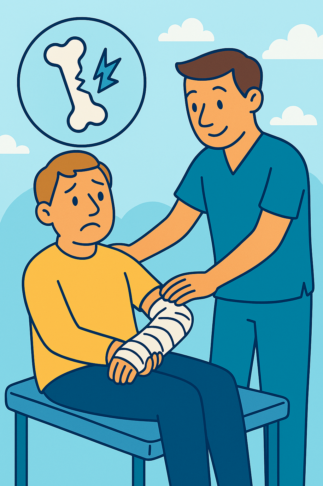

Fisioterapia Traumatológica
¿Qué es la Fisioterapia Traumatológica?
La fisioterapia traumatológica está orientada al tratamiento de lesiones del sistema musculoesquelético, como fracturas, esguinces, luxaciones, tendinitis o cirugías ortopédicas. Su principal objetivo es recuperar la movilidad, la fuerza y la funcionalidad de las áreas afectadas, aliviando el dolor y mejorando la calidad de vida del paciente.
¿En qué consiste la Fisioterapia Traumatológica?
A través de distintas técnicas manuales y ejercicios terapéuticos, la fisioterapia traumatológica busca recuperar la funcionalidad y acelerar los procesos de curación. Se adapta a cada etapa de la rehabilitación: desde la fase aguda (donde se prioriza el control del dolor y la inflamación) hasta la fase de fortalecimiento y retorno a la actividad habitual.
- Terapia manual: Masajes, movilizaciones articulares y manipulaciones para aliviar tensiones y mejorar la movilidad.
- Ejercicio terapéutico: Programas personalizados de fortalecimiento y estiramientos.
- Agentes físicos: Aplicación de calor, frío, electroterapia o ultrasonido, según la fase de la lesión.
Beneficios de un tratamiento adecuado
Un abordaje fisioterapéutico temprano y personalizado ayuda a reducir complicaciones, evita secuelas y favorece una recuperación más rápida y eficaz. Además, contribuye a prevenir futuras lesiones al corregir desequilibrios musculares y mejorar la coordinación del movimiento.
En nuestro equipo, contamos con fisioterapeutas especializados en el ámbito traumatológico que trabajan contigo de forma cercana y profesional, acompañándote paso a paso en tu proceso de recuperación.
¿Necesitas más información?
Si tienes alguna pregunta o necesitas más detalles sobre nuestros servicios, ¡no dudes en contactarnos!
Contáctanos